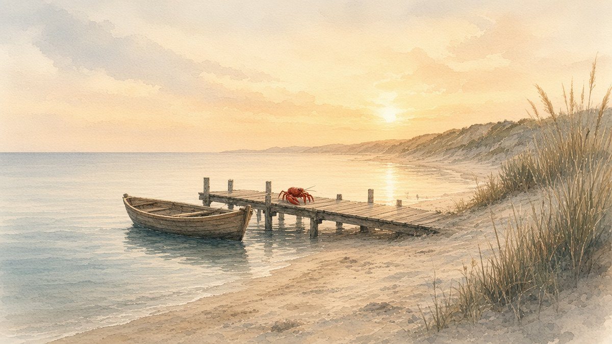

Lobsymiddelbare school
Lobsymiddelbare schoolH4 · P6S-TBU
Lobsymiddelbare school
Jij bent in evenwicht: soms stil, soms actief. Je wilt graag weten hoe iets zit en je helpt anderen graag. Belangrijk voor jou: zelf kunnen kiezen hoe je iets aanpakt. Je voelt je thuis op een plek waar je zelfstandig kunt werken. Je houdt van dieren, tekenen en de natuur.